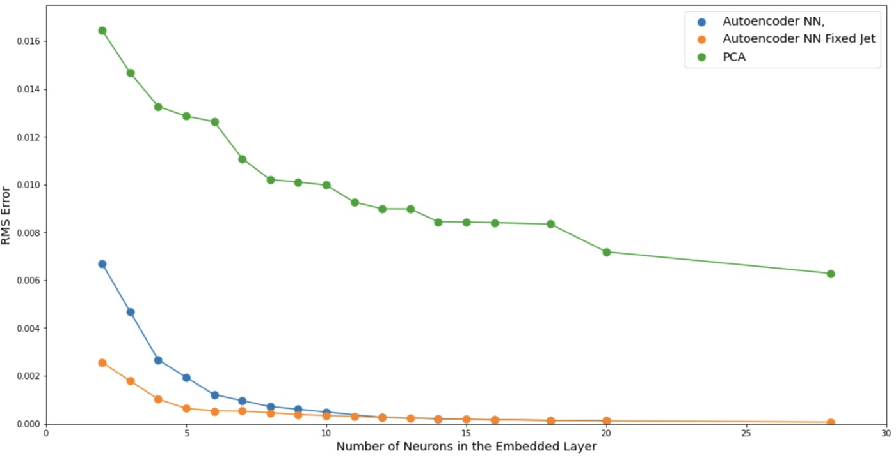

Projects



Informal-settlement exposure
Image segmentation and change detection in satellite imagery to quantify settlement vulnerability and damage after extreme weather in the Caribbean.

Image segmentation and change detection in satellite imagery to quantify settlement vulnerability and damage after extreme weather in the Caribbean.